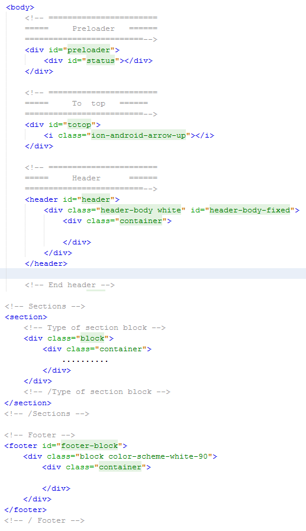

Created: 12/10/2015
By: MosaicDesign
Email: support@mosaicdesign.uz
Thank you for purchasing my theme. If you have any questions that are beyond the scope of this help file, please feel free to email via my user page contact form here. Thanks so much!
This theme is a responsive layout with container and one, two, three and four columns. Header informations are placed within “header” html5 tag. Footer informations are placed within “footer” html5 tag. All other informations are placed within “section” tags. The general template structure is the same throughout the template. Here is the general structure.
Two version of preload:
div id="preloader"
div id="preloader" class="dark"
If you use menu "gn-menu-main":
ul id="gn-menu" class="gn-menu-main dark" - for dark version
ul id="gn-menu" class="gn-menu-main" - for light version
If you use default menu:
div class="header-body" id="header-body-fixed" - for dark version
div class="header-body white" id="header-body-fixed" - for light version
If you would like to change the backgroung color of sections, add this classes:
.color-scheme-1
.color-scheme-2
.color-scheme-3
.color-scheme-4
.color-scheme-white-95
.color-scheme-dark-3
.color-scheme-dark-75
Sections with own header background images
section id="home"
section id="about"
section id="services"
section id="portfolio"
section id="team"
section id="blog"
section id="contact"
if you use "temp1" class for sections, your background images changing.
section id="about" class="temp1"
section id="services" class="temp2"
Three version of section header H1. And align left default, align center add "center" to class
div class="block-part-title"
div class="block-part-title white"
div class="block-part-title white center"
Service block. Left, right and white version
div class="block-service"
div class="block-service icon-left"
div class="block-service icon-left white"
block portfolio version
div class="block-portfolio active"
div class="block-portfolio dark"
div class="block-portfolio"
I'm using two CSS files in this theme. The first one is a generic reset file. Many browser interpret the default behavior of html elements differently. By using a general reset CSS file, we can work round this. This file also contains some general styling, such as anchor tag colors, font-sizes, etc. Keep in mind, that these values might be overridden somewhere else in the file.
The file is separated into sections using:
1. Common styles
1.1. Font-face
1.2. Block background style
1.3. Content colors styles
2. Preloader styles
3. Menu style ( Drop down menu )
4. Header styles
5. Google Nexus menu
6. Google Nexus menu DARK
7. Section style
8. About style
9. Service style
10. Portfolio style
11. Team style
12. Blog style
13. Contact style
11. Ajax style
12. Shortcode style
13. Background style
14. Footer styles
If you need dark version of templade add dark-version.css
This theme imports three Javascript files.
/* ==============================================
smooth scroll
=============================================== */
$("#start").on("click", function () {
$('html, body').animate({
scrollTop: parseInt($("#about").offset().top)}, '800');
return false;
});
/* ==============================================
TO TOP
=============================================== */
$('#totop').on("click", function () {
$('html, body').animate({scrollTop: 0}, '1200');
return false;
});
I've used the following images, icons or other files as listed.
Once again, thank you so much for purchasing this theme. As we mentioned at the beginning, we'd be glad to help you if you have any questions relating to this theme. No guarantees, but we'll do my best to assist. If you have a more general question relating to the themes on ThemeForest, you might consider visiting the forums and asking your question in the "Item Discussion" section.
Mosaic Design